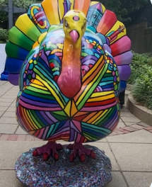

John VanScoyoc
Brookline Select Board
Independent voice

Creative Brookline
A town with real character.
Public art, neighborhood energy, local traditions, and the kind of civic life worth protecting.
Experience and independence matter because Brookline should stay unmistakably Brookline.